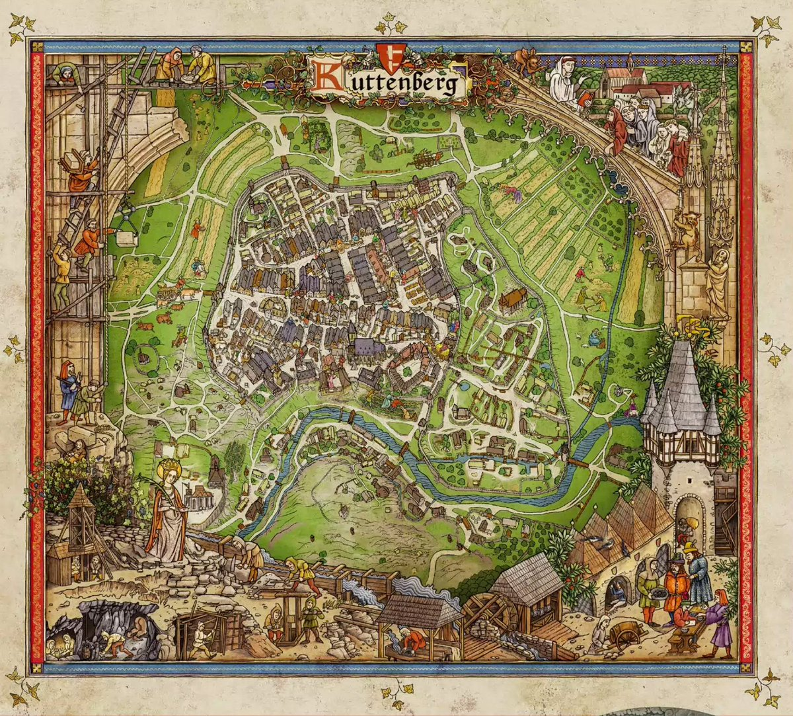

Куттенберг
Куттенберг — центральне місто гри Kingdom Come: Deliverance II. Тут проходять ключові події сюжету та розташовані головні торгові площі, замки та ремісничі майстерні. Місто оточене річками та лісами, а його історична архітектура створює унікальний колорит.
Назад